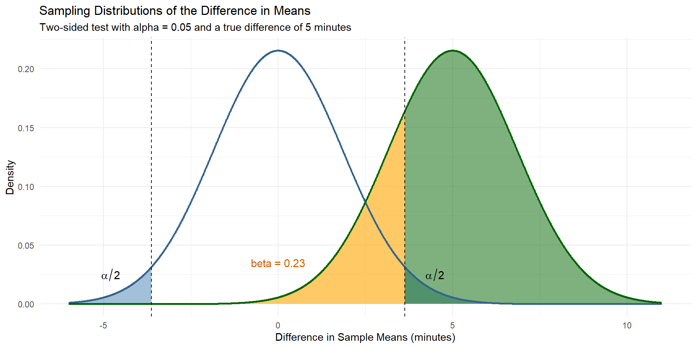
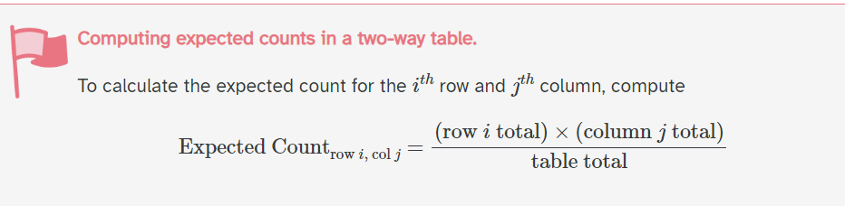
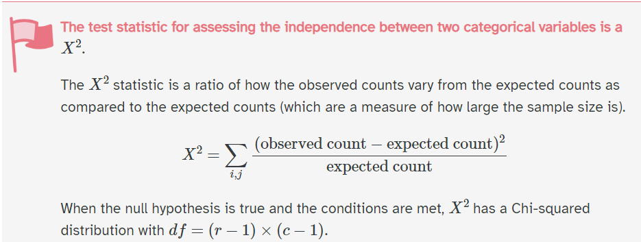
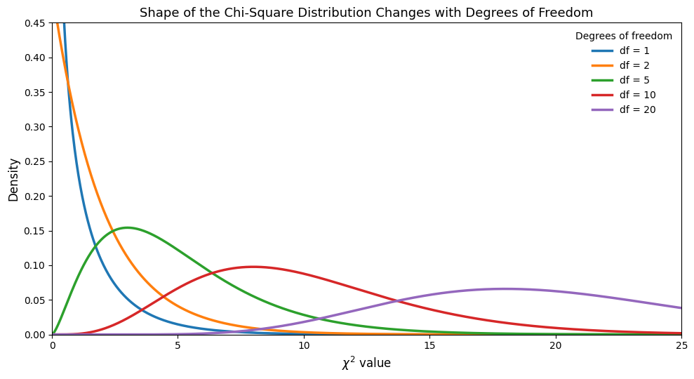
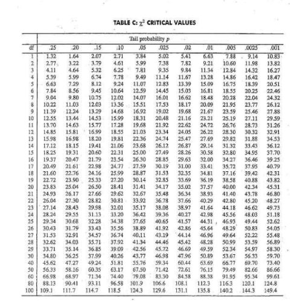

# A tibble: 6 × 3
# Groups: species, sex [6]
species sex n
<fct> <fct> <int>
1 Adelie female 73
2 Adelie male 73
3 Chinstrap female 34
4 Chinstrap male 34
5 Gentoo female 58
6 Gentoo male 61Lecture 13-ish
2026-10-06
– Homework-1 is graded
> Solutions are on Moodle
> Regrade window until Friday 10-9 at 5:00pm– Don’t forget about the Statistics Experience (12-1)
– Exam-2 is on 10-29
– Exam-1 will be released by end of next week
> I don't plan for a curve
> If the performance on one question indicates an unfair question I'll fix it
> Re-grade window will open after grades are released
> Solutions are posted on Moodle
– Homework-2 is LIVE and due on Friday (10-16) at 11:59pm
> 24-hour late window
> Please start earlyLast class, we talked all things power analysis. Let’s review the terms!
– Type-1 error
– Type-2 error
– Power
Last class, we talked all things power analysis. Let’s review the terms!
– Type-1 error: Rejecting the null hypothesis when the null hypothesis was actually true
– Type-2 error: Failing to reject the null hypothesis when the null hypothesis was actually false
– Power: Rejecting the null hypothesis when the null hypothesis was actually false
Where are these respective probabilities on the following graph?
What is an effect size? What is the value of the effect size in our prompt from last class?

Effect size is a quantitative measure of the magnitude of an effect in a population.
The effect size is 5, meaning that the population mean writing time for blue pens is expected to be 5 minutes higher than the population mean writing time for black pens.
So far, we have gone over two different types of categorical inference techniques
– What are they?
– Parameters?
– Statistics?
We are going to study penguins! This real dataset includes measurements for penguin species, island in Palmer Archipelago, size (flipper length, body mass, bill dimensions), and sex.
Suppose that we want to look at the relationship between sex and species. That is, we want to test if species of penguin is independent from sex. How is this different than what we’ve done before?
# A tibble: 6 × 3
# Groups: species, sex [6]
species sex n
<fct> <fct> <int>
1 Adelie female 73
2 Adelie male 73
3 Chinstrap female 34
4 Chinstrap male 34
5 Gentoo female 58
6 Gentoo male 61Can we use difference in means?
Difference in proportions?
The big picture idea is to compare expected counts, under the assumption of the null hypothesis, with observed counts. This is how we are going to calculate our test statistic.
\(Ho:\)
\(Ha:\)
\(Ho: \text{sex and species of penguins are independent at the population level}\)
\(Ha: \text{sex and species of penguins are not independent at the population level}\)
Note: This is a chi-square test of independence. We will learn about a goodness-of-fit-test Thursday!
\(Ho: \text{sex and species of penguins are independent}\)
\(Ha: \text{sex and species of penguins are not independent}\)
– Set up the null and alternative hypotheses
– Collect data
– Check assumptions (so we can trust our theory based tests)
– Calculate our test statistic
– p-value
– decisions and conclusions
What would we expect to see under the assumption of the null hypothesis?
What did we actually observe?
Are the differences “statistically significant”?
| Male | Female | Total | |
|---|---|---|---|
| Adelie | 146 | ||
| Chinstrap | 68 | ||
| Gentoo | 119 | ||
| Total | 168 | 165 | 333 |
– Independence
– Expected frequencies (sample size condition)
How could this be broken?
What might we do to assume this isn’t violated?
With a sample size of 333, what would we expect to see in this table under the assumption that species and sex are independent?
Table of EXPECTED counts
| Male | Female | Total | |
|---|---|---|---|
| Adelie | 146 | ||
| Chinstrap | 68 | ||
| Gentoo | 119 | ||
| Total | 168 | 165 | 333 |

Your book says “average expected cell count is > 5.” This will be our rule of thumb.
If any of the expected values are low the p-values generated by the test start to become less reliable.
With a sample size of 333, what would we expect to see in this table under the assumption that species and sex are independent?
Pick one cell, and calculate the expected count!
Table of EXPECTED counts
| Male | Female | Total | |
|---|---|---|---|
| Adelie | 146 | ||
| Chinstrap | 68 | ||
| Gentoo | 119 | ||
| Total | 168 | 165 | 333 |
| Male | Female | Total | |
|---|---|---|---|
| Adelie | (146*168)/333 | 146 | |
| Chinstrap | (68*168)/333 | 68 | |
| Gentoo | (119*168)/333 | 119 | |
| Total | 168 | 165 | 333 |
| Male | Female | Total | |
|---|---|---|---|
| Adelie | 73.658 | 146 | |
| Chinstrap | 34.306 | 68 | |
| Gentoo | 60.036 | 119 | |
| Total | 168 | 165 | 333 |
If there is no difference between sex and species, we would expect to observe this values above from our sample.
| Male | Female | Total | |
|---|---|---|---|
| Adelie | 73.658 | (146*165)/333 = 72.343 | 146 |
| Chinstrap | 34.306 | (68*165)/333 = 33.694 | 68 |
| Gentoo | 60.036 | (119*165)/333 = 58.964 | 119 |
| Total | 168 | 165 | 333 |
Are these all larger than 5?
The big picture idea is to compare expected counts (under the assumption of the null hypothesis with observed counts. This is how we are going to calculate our test statistic.
– Null hypothesis ✔️
– Expected ✔️
– Observed counts
| Male | Female | Total | |
|---|---|---|---|
| Adelie | 73 | 73 | 147 |
| Chinstrap | 34 | 34 | 68 |
| Gentoo | 61 | 58 | 119 |
| Total | 168 | 165 | 333 |
Expected values are in ( )
| Male | Female | Total | |
|---|---|---|---|
| Adelie | 73 (73.658) | 73 (72.342) | 146 |
| Chinstrap | 34 (34.306) | 34 (33.694) | 68 |
| Gentoo | 61 (60.036) | 58 (58.964) | 119 |
| Total | 168 | 165 | 333 |
What do we think? Without doing a formal test, do you think we will reject or fail to reject the null hypothesis? Why?
The big picture idea is to compare expected counts (under the assumption of the null hypothesis with observed counts. This is how we are going to calculate our test statistic.
– Null hypothesis ✔️
– Expected ✔️
– Observed counts ✔️
Let’s perform the test

where r is the number of groups for one variable (rows) and c is the number of groups for the second variable (columns)
The Chi-Square test statistic \(\chi^2\) is mathematically based on the normal distribution (specifically, the Chi-Square distribution is the sum of squared standardized normal variables): \(Z_1^2 + \cdots + Z_k^2 \sim \chi_k^2\)
… because of this, we can derive and understand its shape mathematically (when certain assumptions are met)

If our assumptions are not met, the test statistic doesn’t actually follow the distribution it’s being compared to…. so we can’t trust the results. The math behind the scenes of these distributions break down.
I want us to take time and play around with this applet! Explore and learn.
The CLT isn’t what makes a chi-square statistic approximately chi-square. The expected-count conditions are related to that approximation. The CLT explains why the chi-square distribution itself becomes approximately normal as its degrees of freedom increase.
(Difference in means case): Because \(\bar X\) is a function of random variables, \(\bar X\) is itself a random variable. It’s the same thing with Chi-square!
The Central Limit Theorem tells us that sums of many independent random variables tend to become approximately normal, provided they have finite mean and variance.
\(\chi^2 = Z_1^2 + \cdots + Z_k^2\) approaches normal as degrees of freedom increase!
– The shape of the chi-square distribution curve depends on the degrees of freedom
– Test statistic can not be negative
– The chi-square distribution curve is skewed to the right, and the chi-square test is always right-tailed
– A chi-square test cannot have a directional hypothesis. A chi-square value can only indicate that a relationship exists between two variables, not what the relationship is.
You can use a table……

You can use an applet. You can use software.
What does our p-value look like?
What does our p-value look like mathematically?
\(f(x) = \frac{1}{2^{k/2}\Gamma(k/2)}x^{k/2-1}e^{-x/2}, \qquad x > 0\)
\(k\) = the degrees of freedom of the chi-square distribution.
\(x\) = a possible value of the chi-square random variable. In other words, it is a possible value of the test statistic.
where \(\Gamma(\cdot)\) is the gamma function.
\(\Gamma(x) = \int_0^\infty t^{x-1}e^{-t}\,dt\) (ensures that the area under the curve = 1)
\[ \begin{aligned} f(x) &= \frac{1}{2^{k/2}\Gamma(k/2)}x^{k/2-1}e^{-x/2} \\ &= \frac{1}{2^{2/2}\Gamma(2/2)}x^{2/2-1}e^{-x/2} \\ &= \frac{1}{2^1\Gamma(1)}x^0e^{-x/2} \\ &= \frac{1}{2}e^{-x/2} \\ p &= \int_{0.048607}^{\infty}\frac{1}{2}e^{-x/2}\,dx \\ &= e^{-0.048607/2} \\ &\approx 0.97598 \end{aligned} \]
You are not responsible for the math, but I share this to help you see this content from multiple perspectives.
P(\(\chi^2 \geq X^2\)) = p-value
The probability of observing our statistic, or something larger given the null hypothesis is true.
\(\chi^2\) = map of possible outcomes on the chi-sq distribution (random variable because it is generated from a random process)
\(X^2\) = your statistic calculated
Decision?
Conclusion?
Fail to reject the null hypothesis
Weak evidence to conclude that species and sex are not independent (or that species has an impact on sex)
– Chi-square testing is used when we want to test for independence when we have a categorical variable with > 2 levels
– Always right tailed test
– df of (r-1)*(c-1)
I suggest having the homework up, and looking at the plot as you calculate the probability of a type-II error/power/
pnorm() is used to calculate the area under the curve of a normal distribution. To answer this question, we need:
– The critical values from the null distribution
– The probability that we fail to reject the null hypothesis given the alternative hypothesis is true. Therefore, we can calculate the probability of a Type-II error by using the alternative distribution. We specify the center of the alternative distribution with mean = .2. In the code below:
– Replace the critical_value with the correct values for a two sided \(\alpha = 0.05\) test.
– Replace your_se with the correct standard error you calculated from the null distribution (same shape as the alternative).
– Click run!